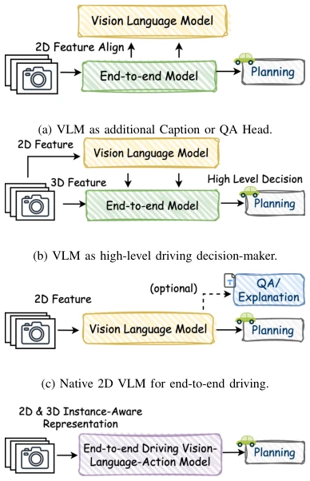
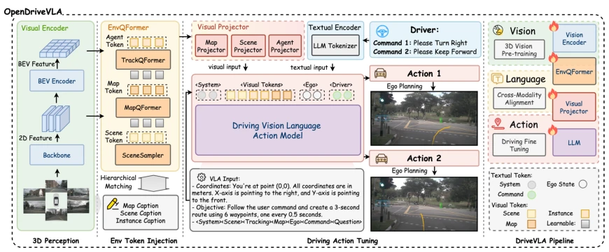
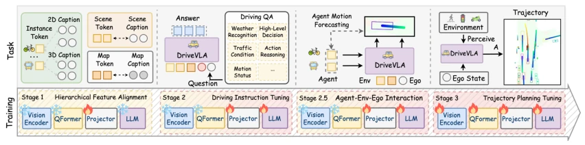
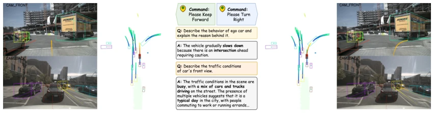
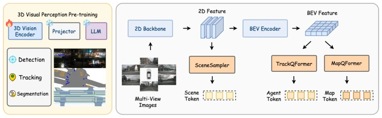
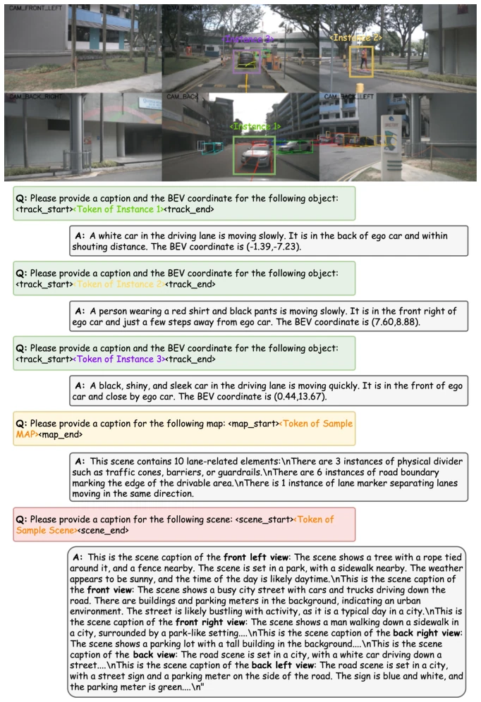
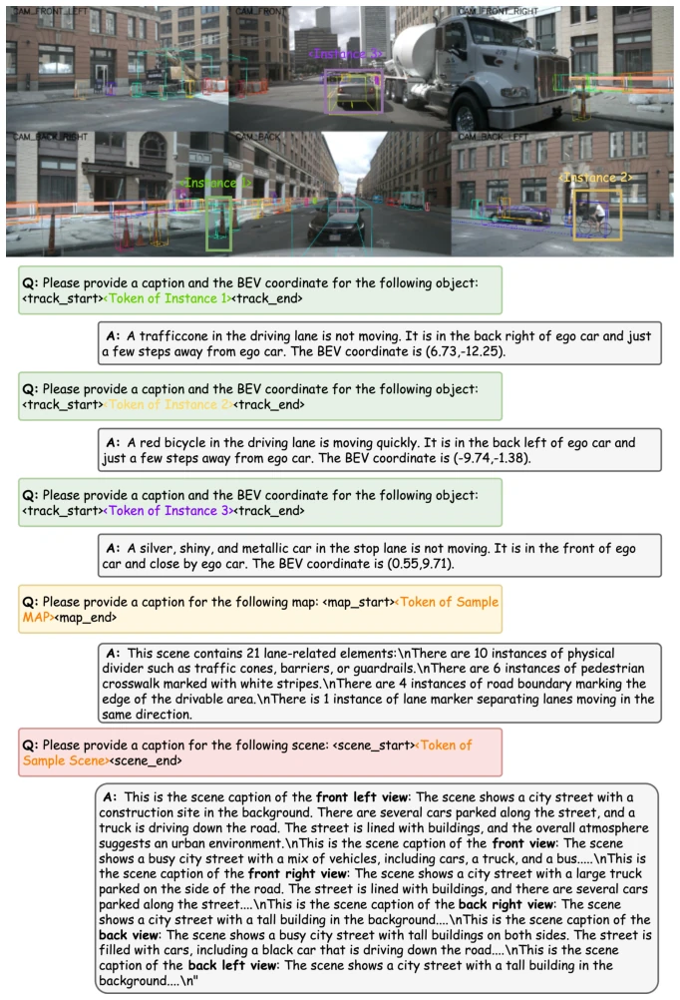
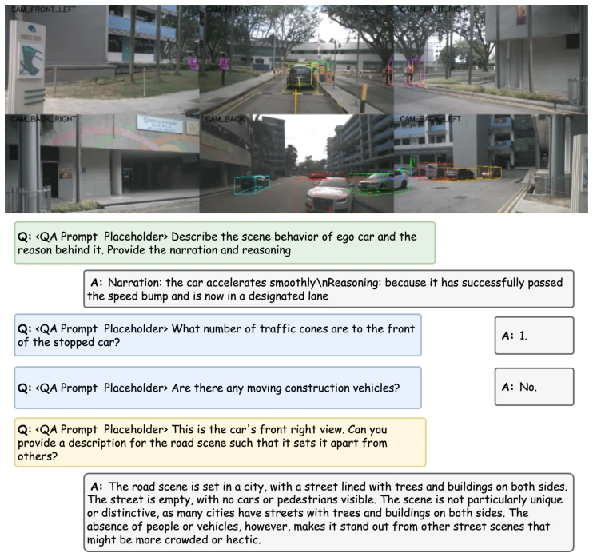
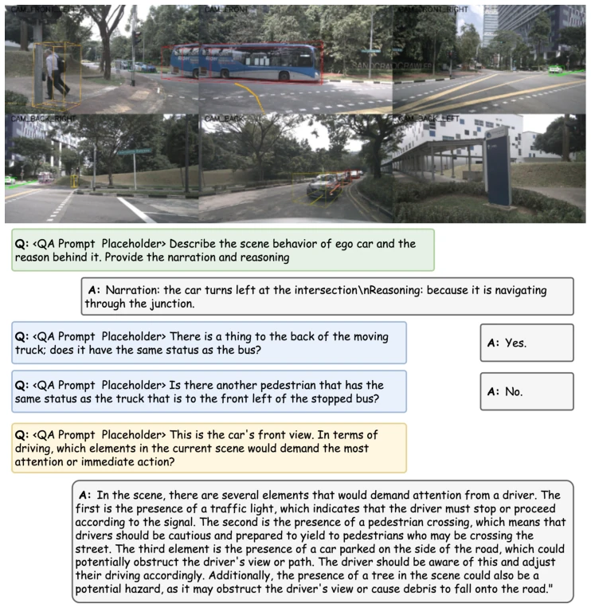
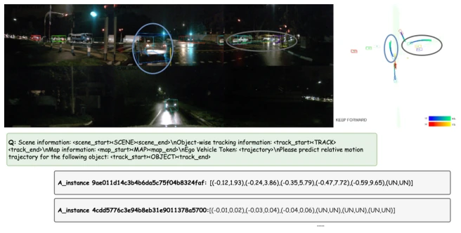

这篇论文把 VLA 塞进自动驾驶，试图用大模型解决端到端规划。亮点是搞了个分层对齐，把 3D 实例感知转成文本，试图解决 VLM 幻觉问题。但本质上还是“语言模型开环规划”，在 nuScenes 上刷榜容易，真路上跑起来推理延迟和长尾泛化咋样？0.5B 版本就能打，说明小模型也能干，但 3D 感知还是用的 ResNet-101，感觉有点复古。不过能把 Agent-Env-Ego 交互塞进 LLM 训练里，算是给大模型加了点物理常识，值得点赞。此外，它依赖预训练 LLM，推理成本不低，且主要评估开环，闭环表现未知，属于“纸上谈兵”的进阶版。
This paper integrates VLA into autonomous driving, attempting to solve end-to-end planning with large models. The highlight is a hierarchical alignment that converts 3D instance perception into text, attempting to address the VLM hallucination problem. However, it is essentially "language model open-loop planning"; while easy to achieve top rankings on nuScenes, how are the inference latency and long-tail generalization when actually running on real roads? The 0.5B version is capable, indicating small models can also perform the task, but 3D perception still relies on ResNet-101, which feels somewhat retro. However, incorporating Agent-Env-Ego interaction into LLM training adds some physical common sense to large models, which is worth praising. Additionally, it relies on pre-trained LLMs, resulting in non-negligible inference costs, and primarily evaluates open-loop performance, with closed-loop performance unknown, making it an advanced version of "armchair strategizing".
Existing end-to-end autonomous driving systems (such as UniAD [10]) can jointly optimize perception and planning, but exhibit obvious semantic reasoning bottlenecks and fail to understand complex scene logic. Meanwhile, general VLMs (such as LLaVA [16]) excel at 2D static understanding; directly applying them to dynamic 3D driving environments results in poor spatial reasoning and hallucinations [6]. For example, instance-agnostic VLMs are prone to generating overconfident erroneous descriptions [28]. This paper aims to address how to generate safe spatially grounded actions using large VLMs while balancing inference speed and planning effectiveness. To tackle issues of poor long-tail generalization and rigid task reasoning, the authors attempt to introduce the context reasoning capabilities of VLMs to compensate for the shortcomings of traditional end-to-end models in complex semantic understanding.

Fig. 2: Taxonomy of vision-language model applications in end- to-end autonomous driving.
The overall process consists of four training stages. First, 3D visual perception extracts multi-view features using ResNet-101 and generates three types of tokens (Scene, Agent, Map) via QueryTransformer. Stage 1 is hierarchical alignment, using a Projector to map visual tokens to the LLM embedding space while freezing the LLM and Encoder. Stage 2 is instruction tuning, injecting driving knowledge using QA datasets. Stage 2.5 introduces Agent-Env-Ego interaction modeling, predicting surrounding vehicle trajectories as an auxiliary task to teach the model physical laws. Stage 3 is end-to-end trajectory planning, tokenizing future trajectories for autoregressive generation. Inputs include the visual environment, ego vehicle state, and language instructions. The key innovation lies in aligning structured visual tokens with language space and explicitly modeling multi-agent interaction, thereby endowing the LLM with spatial reasoning capabilities.

Fig. 1: OpenDriveVLA leverages open-source pre-trained large vision-language-action models to generate driving actions conditioned on 3D environmental perception, ego-vehicle states, and driver commands. It achieves strong performance in both open-loop planning and driving-related question answering, demonstrating its proficiency in scene understanding and driving action tuning.

Fig. 3: Illustration of main training stages on OpenDriveVLA. Stage 1: Hierarchical Feature Alignment. Stage 2: Driving Instruction Tuning. Stage 2.5: Agent-Env-Ego Interaction Modeling. Stage 3: Trajectory Planning Tuning.
Evaluation of open-loop planning was conducted on nuScenes, with metrics focusing on L2 error and Collision rate. Comparisons were made against VAD, UniAD, GPT-Driver, etc. OpenDriveVLA-7B achieved an average L2 of 0.66m under UniAD metrics, outperforming most open-source models. VQA tasks also achieved SOTA on nuCaption and nuScenes-QA. Ablation experiments show that adding visual input and interaction modeling significantly reduces the collision rate. The 0.5B version performed unexpectedly strongly, proving that small parameter counts can also handle the task. Additionally, the model can adjust trajectories based on instructions, such as changing from straight to right turn, demonstrating good instruction following capabilities.

Fig. 4: Visualization of OpenDriveVLA-7B planning actions under original dataset instruction to keep forward (left) and modified instruction to turn right (right). The QA prediction showcases (middle) are from results reported in Table II and Table III. The agent motion prediction results are visualized after the agent-env-ego interaction stage.
其他图片Other Figures

Fig. 5: Overview of the visual encoder pretraining stage. The 3D vision-centric pretraining tasks include 3D object detection, tracking, and BEV panoptic segmentation. The extracted features are projected into scene, agent, and map tokens for downstream vision-language alignment and planning.

Fig. 6: Example 1 of Stage 1 dataset visualization from nuScenes Sample 90. Green boxes show instance token captions; Yellow boxes indicate map token captions; Red boxes represent scene token captions.

Fig. 7: Example 2 of Stage 1 dataset visualization from nuScenes Sample 3287. Green boxes show instance token captions; Yellow boxes indicate map token captions; Red boxes represent scene token captions.

Fig. 8: Example 1 of Stage 2 dataset visualization from nuScenes Sample 6801. Green boxes show nuX dataset predictions; blue boxes are from nuScenes-QA dataset, while yellow boxes are from nuCaption.

Fig. 9: Example 2 of Stage 2 dataset visualization from nuScenes Sample 6801. Green boxes show nuX dataset predictions; blue boxes are from nuScenes-QA dataset, while yellow boxes are from nuCaption.

Fig. 10: Example 1 of agent motion prediction result of stage 2.5 Agent-Environment-Ego interaction modeling on nuScenes validation set Sample 8587.